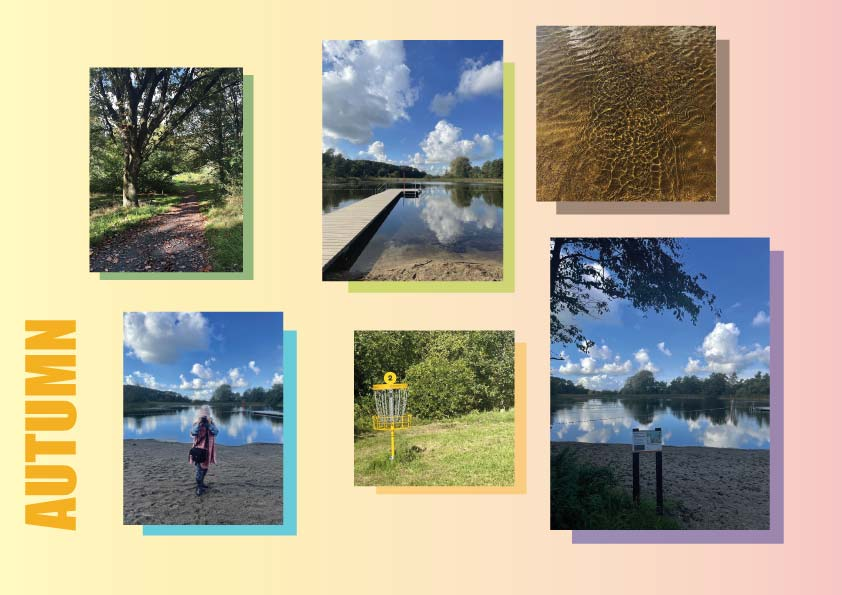
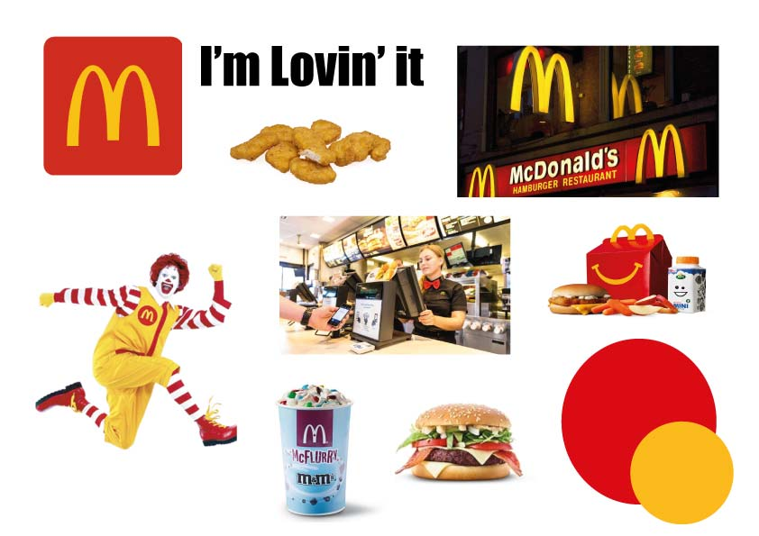

Vi var som del af undervisningen ude i den lokale park på fotosafari. Fotosafari handler om at observere og opfange på kamara humøret og stemningen i det område du vil observere. Billederne vi tog i parken skulle vi senere bruge til at lave et moodboard.
Moodboards handler om at man samler en bred vifte af billeder eller andre ting der definere og udtrykker et personligt eller en virksomheds indentitet.(line25.com) Moodboards hjælper designere med at finde inspiration til den vej de gerne vil gå med deres design. Med moodboards er det også nemmer for designeren at forklare hvorfor de træffer bestemte designbeslutninger overfor kollegaer og interessenter.(designmodo.com)
Efter en times tid i parken tog vi tilbage på skolen for at lave moodboards med de billeder vi tog. Ser jeg tilbage på projektet ville jeg have valgt nogle andre faver samt sat flere ord og teksture på mit moodboard
Vi arbejdede på et senere tidpunkt videre med moodboards og fik til opgave at lave et moodboard til McDonalds. Her var fokus at fange humøret og stemningen når man besøgte en af deres resturanter. Vi fandt billeder på nettet af forskellige ting vi forbandt med McDonald.
Arbejdet med moodboards og fotosafari gav god inspiration til hvordan man kan finde frem til den rette æstetik, samt også finde inspiration i omgivelserne omkring.